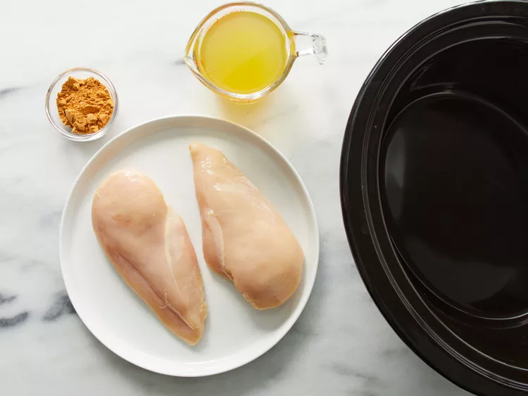
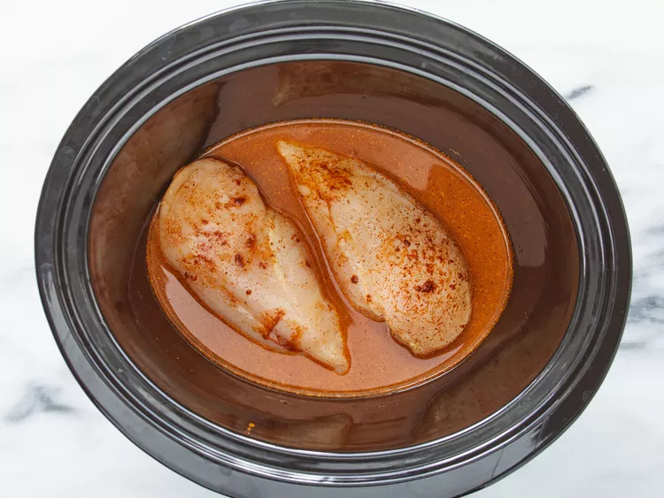

This slow cooker chicken tacos recipe is easy to make with just 3 ingredients for flavorful, super tender, shredded chicken. Spoon the chicken into warm tortillas for a very tasty meal any day of the week.
Ingredients
1 cup chicken broth
3 tablespoons taco seasoning mix
1 pound skinless, boneless chicken breasts
Steps:
Gather all ingredients.

Step 1
Combine chicken broth and taco seasoning mix in a bowl.
Place chicken in a slow cooker. Pour chicken broth mixture over chicken.

Step 3
Cook on Low for 6 to 8 hours. Shred chicken with two forks.